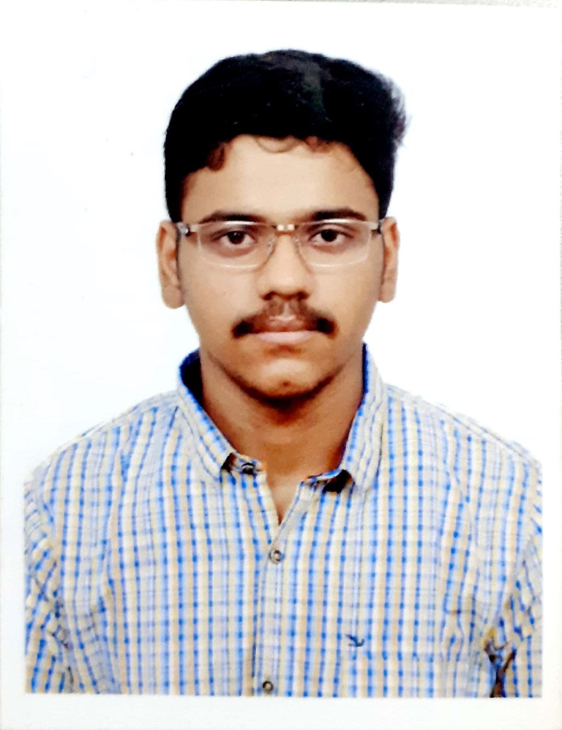
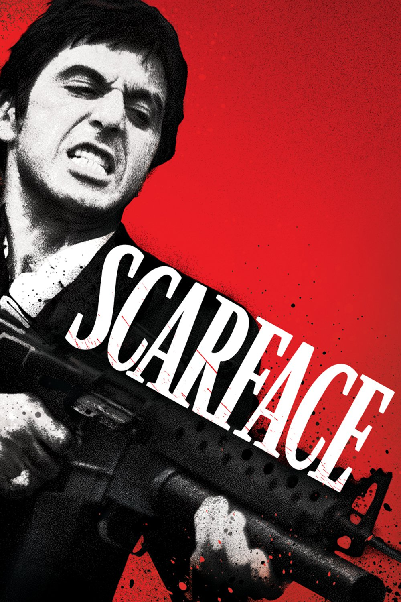
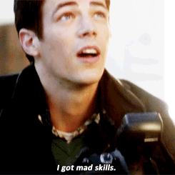

- About
- Hey there peeps! How you been doing? Hope you guys are doing pretty awesome.
This website will provide you with a gist about me.
For starters I am S.Guruprasad,I am from Chennai.
I love dank memes and amazing food.I spend my entire day losing in FIFA miserbly to my friends :/
Oh yes,I can be productive as well.

- Education
- I did my schooling at Jawahar Vidyalaya senior secondary school,Chennai.
From kindergarten till high school I was a proud Jawaharite and I still am.
I am currently persuing my B.Tech degree at SRM Institute Of Science and Technology.
- Internship
- Perhaps the best decision I have ever taken so far is my internship.
I had an amazing oppourtunity do internship at Knowledge Lens,Bangalore.
Its a start up and they worked on mini and micro computers like Raspberry Pi.
I had the chance to learn about machine learning and basic python.

- Project
- Over the course of past three years,I have had my hand over three projects.
All the projects were based on IoT and it was geared towards helping the people and our nation.
- Achievements
- I was part of my college cultural team which helped to oragnise a "Go green marathon" at Elliots beach,Chennai.
My project "IoT Based Environment Monitoring System was accepted by Springer Journal"

- Motivation
- In my opinion,Cinema is one the greatest form of art and I am avid fan of films and tv shows.
I am able to relate myself and my day to day life in flims and I am huge fan of Al Pacino.
Movies like Scarface,Godfather trilogy and The Heat are classics.These movies and its character motivate me.
- Likes
- I love football and I am chelsea Fam.
I spend my leisure hours playing video games
I still watch wwe.
- Ambition
- I always wanted to be part of something which is larger than life.
I want to give my 100% to something now or later which is going to benefit every individual in the society.
I want give my best and bring the best out in people.

- Why should you hire me
- I have always been a team player and I work well under construtive team and environment.
I am honest about myself and things I know
I have always been agile and adpative so working under a multi cultural team is easy for me.
I will make sure that company deadlines are met and I will work with my full potential.
This website will provide you with a gist about me.
For starters I am S.Guruprasad,I am from Chennai.
I love dank memes and amazing food.I spend my entire day losing in FIFA miserbly to my friends :/
Oh yes,I can be productive as well.
From kindergarten till high school I was a proud Jawaharite and I still am.
I am currently persuing my B.Tech degree at SRM Institute Of Science and Technology.
I had an amazing oppourtunity do internship at Knowledge Lens,Bangalore.
Its a start up and they worked on mini and micro computers like Raspberry Pi.
I had the chance to learn about machine learning and basic python.
All the projects were based on IoT and it was geared towards helping the people and our nation.
My project "IoT Based Environment Monitoring System was accepted by Springer Journal"
I am able to relate myself and my day to day life in flims and I am huge fan of Al Pacino.
Movies like Scarface,Godfather trilogy and The Heat are classics.These movies and its character motivate me.
I spend my leisure hours playing video games
I still watch wwe.
I want to give my 100% to something now or later which is going to benefit every individual in the society.
I want give my best and bring the best out in people.
I am honest about myself and things I know
I have always been agile and adpative so working under a multi cultural team is easy for me.
I will make sure that company deadlines are met and I will work with my full potential.